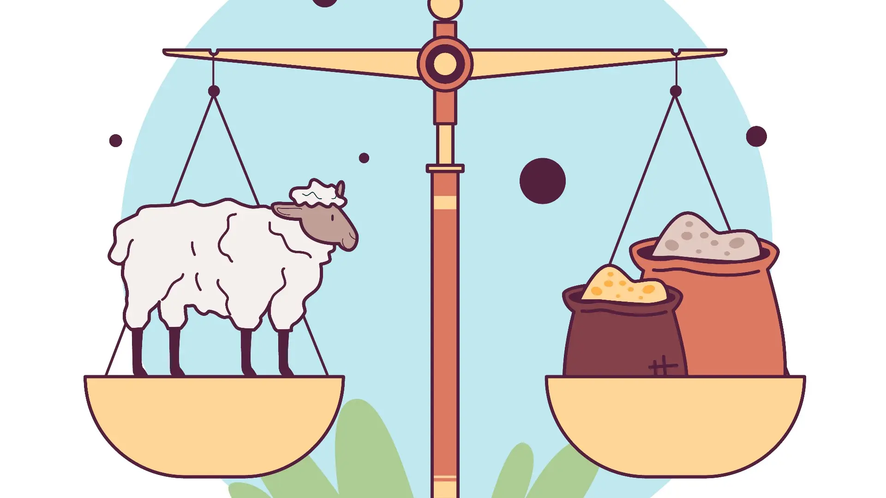
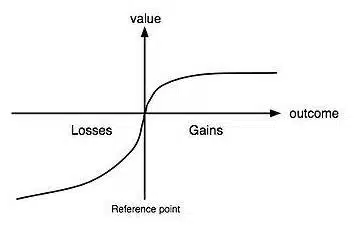
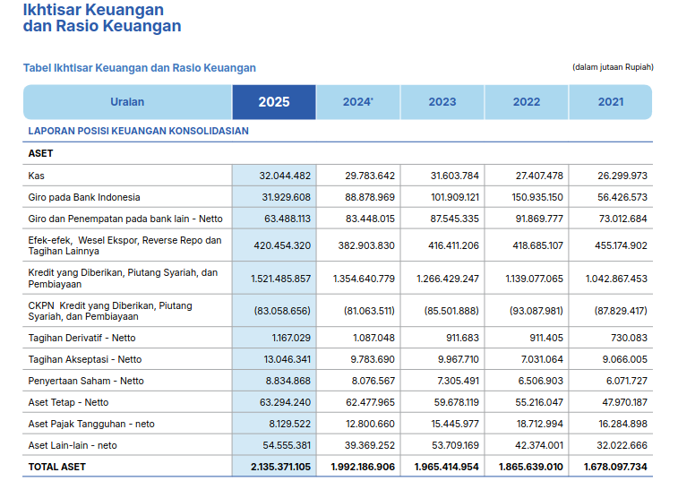
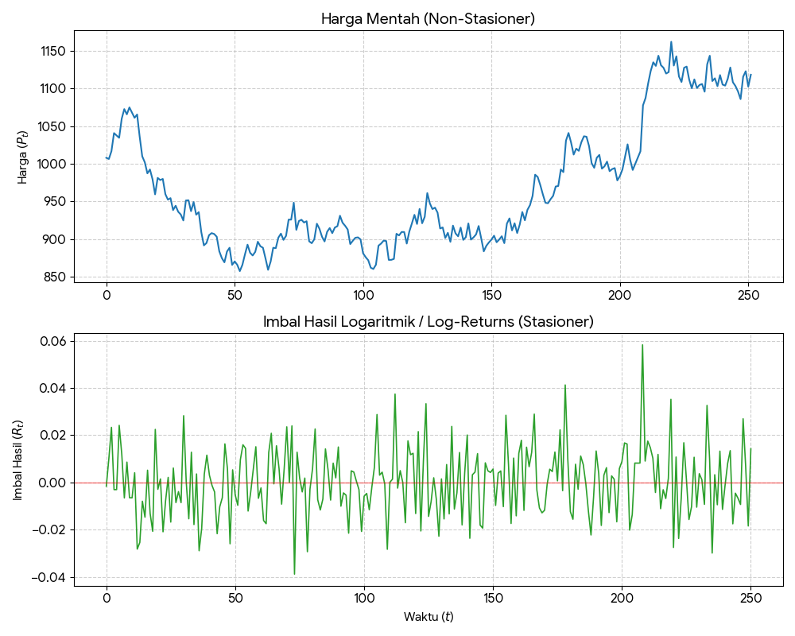
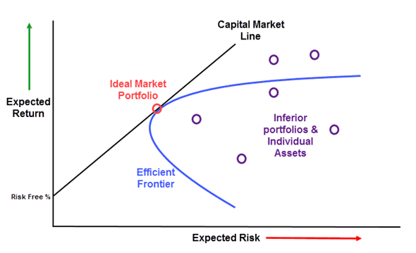
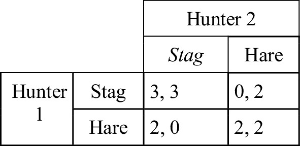
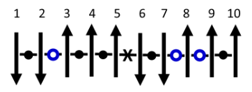
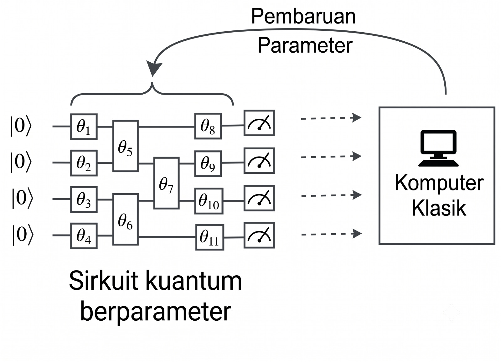
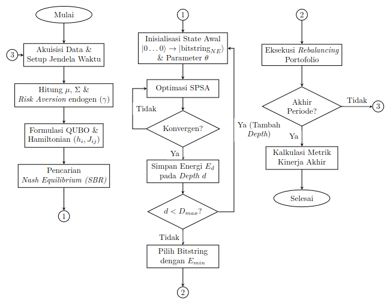

OPTIMASI PORTOFOLIO BERBASIS MODEL MARKOWITZ MENGGUNAKAN METODE VARIATIONAL QUANTUM EIGENSOLVER
Tugas Akhir SF234801
Pembimbing : Dr. Heru Sukamto, M.Si.
Ko-Pembimbing : Dr. Gagus K. Sunnardianto
Departemen Fisika, Institut Teknologi Sepuluh Nopember
Fase 0: Pendahuluan
Latar Belakang Masalah
- Limitasi Model Markowitz: Pendekatan klasik kesulitan menangani anomali pasar (fat-tailed distribution) dan dinamika non-linear ketika jumlah parameter korelasi antar aset membesar.
- Pendekatan Ekonofisika: Mengubah fungsi objektif optimasi menjadi kerangka Quadratic Unconstrained Binary Optimization (QUBO) agar selaras dengan model Hamiltonian Ising.
- Potensi Komputasi Kuantum: Memanfaatkan Variational Quantum Eigensolver (VQE) untuk mencari ground state energi (representasi alokasi portofolio terbaik) dengan waktu komputasi yang efisien.
Penelitian Terdahulu dan Research Gap

Penelitian Terdahulu
Wang dkk. (2025)
VQE + WCVaR + CMA-ES
Stabilisasi konvergensi energi.
➜

Penelitian Terdahulu
Wei dkk. (2025)
Quantum-Classical Hybrid Annealing
Memecah masalah QUBO kompleks menjadi submasalah.
➜

Research Gap
Masih bergantung pada
inisialisasi acak
yang rentan mengalami
Barren Plateau
Solution. 
Penelitian Ini
Menggunakan Nash Equilibrium sebagai Warm-Start Initialization
🔍 Kontribusi Tambahan

Entropi Von Neumann
Digunakan untuk memantau perubahan purity dan tingkat keacakan keadaan kuantum selama proses optimasi.
Wang et al. (2025); Wei et al. (2025)
Tujuan Penelitian
- Menganalisis ketepatan transformasi matematika dan kardinalitas portofolio pada fungsi potensial EPG ke kerangka Spin Ising.
- Mengevaluasi kontribusi strategi inisialisasi warm-start (dibanding inisialisasi acak) terhadap peningkatan efisiensi konvergensi energi kuantum.
- Menguji supremasi (backtesting) pengembalian finansial strategi portofolio hibrida GT-VQE pada kondisi pergerakan historis pasar modal riil.
Fase 1: Landasan Finansial
Konsep Uang
- Kebutuhan manusia yang terbatas, namun keinginan tidak terbatas.
- Sumber daya alam bersifat terbatas.
- Uang berfungsi sebagai alat penyeimbang antara sumber daya yang ada dan keinginan manusia.
Sejarah dan Evolusi Uang
- Barter: Sistem pertukaran barang secara langsung.
- Uang Logam/Komoditas: Menggunakan nilai intrinsik barang (misal: emas, perak).
- Uang Kertas Basis Logam: Representasi fisik dari logam mulia.
- Uang Fiat: Nilai uang tidak didukung aset fisik, melainkan kebijakan pemerintah dan kepercayaan.

Inflasi
- Penyebab Inflasi: Uang fiat dapat dicetak dan diedarkan seiring dengan kebijakan pemerintah (Nixon Shock 1971 - akhir dari standar emas).
- Dampak: Nilai uang terdegradasi seiring waktu; daya beli menurun.
- Solusi: Menjaga kekayaan dari inflasi melalui investasi.

Investasi
- Proteksi Aset: Investasi sebagai instrumen untuk mempertahankan nilai kekayaan pribadi dari inflasi.
- Pemutar Ekonomi: Dibutuhkan oleh sistem ekonomi agar barang dan jasa dapat bertumbuh.
- Risk-Return & Risk Profile: Mengambil risiko terukur (money management) untuk mendapat imbal hasil di atas inflasi.
- Loss Aversion (Teori Prospek): Rasa sakit kehilangan lebih intens daripada kegembiraan dari keuntungan bernilai sama. Toleransi risiko menurun seiring usia dan meningkat seiring kekayaan.


Fase 2: Strategi Analisis Investasi
Tiga Pilar Utama Analisis
Terdapat 3 pilar utama analisa yang digunakan sebelum mengambil keputusan investasi: 1. Analisis Fundamental: Evaluasi nilai intrinsik dan kesehatan emiten. 2. Analisis Teknikal: Pemetaan psikologi pasar melalui pola visual harga. 3. Analisis Kuantitatif: Pemodelan matematis berbasis data runtun waktu.
Analisis Fundamental
Mengapa harus analisis fundamental? * Ekonometrik Perusahaan: Laporan keuangan, Kapitalisasi pasar, Peran tokoh-tokoh yang terlibat. * Kesehatan Fiskal: Price-to-Earnings Ratio (PER), Debt-to-Equity Ratio (DER). * Sentimen Pasar: Berita ekonomi, Kebijakan pemerintah, Tren media sosial.

Analisis Teknikal
Representasi visual menggunakan Candlestick dan Price Chart untuk mendeteksi psikologi kolektif pelaku pasar.


Analisis Kuantitatif
Mengapa dan jenis analisis kuantitatif: * Simple Return (\(R\)): \[ R_t = \frac{P_t - P_{t-1}}{P_{t-1}} \] * Logarithmic Return (\(r\)): \[ r_t = \ln\left(\frac{P_t}{P_{t-1}}\right) \] * \(P_t\): Harga pada waktu \(t\)

Model Markowitz sebagai Pelopor
- Mean-Variance: Didasarkan oleh prinsip Pareto Optimum (mencari imbal hasil setinggi mungkin dengan risiko serendah mungkin). \[ \mathcal{L}(\mathbf{\omega}) = \sum_{i,j} \sigma_{ij} \omega_i \omega_j - \lambda \sum_i \mu_i \omega_i \]
- \(\mu_i\): Imbal hasil rata-rata aset ke-\(i\)
- \(\sigma_{ij}\): Kovarians antara aset \(i\) dan \(j\)
- \(\omega_i\): Proporsi bobot kontinu aset ke-\(i\) \((\sum \omega_i = 1)\)
- \(\lambda\): Parameter toleransi risiko

Penurunan: Dari Bobot Kontinu \(\omega\) ke Variabel Biner \(x\)
Langkah 1 — Formulasi Lagrangian Kontinu (Markowitz):
Fungsi biaya Markowitz dalam domain bobot kontinu \(\omega_i\):
\[\mathcal{L}(\mathbf{\omega}) = \sum_{i,j} \sigma_{ij} \omega_i \omega_j - \lambda \sum_i \mu_i \omega_i\]
dengan kendala \(\sum_i \omega_i = 1\) dan \(\omega_i \geq 0\).
Langkah 2 — Substitusi Variabel Biner:
Variabel bobot kontinu \(\omega_i\) diubah menjadi variabel biner \(x_i \in \{0, 1\}\) melalui hubungan:
\[\omega_i = \frac{x_i}{K}\]
di mana \(K\) adalah jumlah aset yang dipilih dari total \(N\) kandidat.
Langkah 3 — Substitusi ke Lagrangian:
Substitusi \(\omega_i = x_i/K\) ke dalam fungsi Lagrangian:
\[\mathcal{L}(\mathbf{x}) = \sum_{i,j} \sigma_{ij} \frac{x_i}{K} \frac{x_j}{K} - \lambda \sum_i \mu_i \frac{x_i}{K}\]
\[\therefore \mathcal{L}(\mathbf{x}) = \sum_{i,j} \sigma_{ij} \frac{x_i x_j}{K^2} - \lambda \sum_i \mu_i \frac{x_i}{K}\]
Nilai \(x_i = 1\) merepresentasikan beli, sedangkan \(x_i = 0\) merepresentasikan tidak membeli.
Interpretasi:
| Simbol | Domain Kontinu | Domain Biner |
|---|---|---|
| Variabel keputusan | \(\omega_i \in [0, 1]\) | \(x_i \in \{0, 1\}\) |
| Kendala | \(\sum \omega_i = 1\) | \(\sum x_i = K\) |
| Bobot per aset | \(\omega_i\) (kontinu) | \(1/K\) (seragam) |
| Dimensi ruang solusi | Kontinu (\(\mathbb{R}^N\)) | Diskrit (\(2^N\)) |
Fase 3: Teori Permainan dan SBR Warm-Start
Pengantar Teori Permainan
- Mengkaji bagaimana agen rasional membuat keputusan strategis di bawah ketergantungan tindakan agen yang lain.
- Komponen Utama: Agen (Pemain), Himpunan Strategi, dan Fungsi Utilitas (Payoff).
- Nash Equilibrium: Kondisi paling stabil di mana tidak ada satu pun agen yang bisa meningkatkan utilitasnya dengan mengubah strateginya sendiri secara sepihak.
Jenis-Jenis Permainan (Game Types)
Contoh klasik Game Theory dengan matriks payoff:



Exact Potential Game (EPG)
- Model permainan yang memetakan seluruh utilitas pemain menjadi satu fungsi potensial global (\(\Phi\)).
- Berfungsi sebagai kerangka analitik untuk mencari Nash Equilibrium (NE) secara terstruktur melalui maksimisasi nilai \(\Phi\).
- Perubahan utilitas lokal (\(\Delta u_i\)) sebanding persis dengan perubahan potensial global (\(\Delta \Phi\)). \[ \Delta \Phi = \Phi(s_i', s_{-i}) - \Phi(s_i, s_{-i}) = u_i(s_i', s_{-i}) - u_i(s_i, s_{-i}) \]
- Jika \(\Delta \Phi > 0\), agen termotivasi untuk bertukar strategi. Jika \(\Delta \Phi < 0\), agen akan menolak perubahan, sehingga sistem mencapai Nash Equilibrium.
EPG pada Alokasi Portofolio
- Transformasi persamaan utilitas Markowitz biner menjadi fungsi potensial global EPG: \[ \Phi(\mathbf{x}) = \sum_{l=1}^N \mu_l \frac{x_l}{K} - \frac{\gamma}{2}\sum_{i=1}^N\sum_{j=1}^N \sigma_{ij} \frac{x_i}{K} \frac{x_j}{K} \]
- Representasi ini memudahkan integrasi antara teori ekonomi rasional (Markowitz) dan fisika statistik (Model Ising).
- Fungsi potensial ini langsung dikonversikan menjadi nilai energi Hamiltonian (dengan \(\hat{H} = -\Phi(x)\)) setelah disubstitusi dari biner \(x_i \in \{0, 1\}\) ke spin \(Z_i \in \{1, -1\}\).
Penurunan: Dari Model Markowitz Biner ke Fungsi Potensial EPG
Langkah 1 — Lagrangian Biner Markowitz:
Dari transformasi \(\omega_i = x_i/K\), diperoleh fungsi Lagrangian biner:
\[\mathcal{L}(\mathbf{x}) = \sum_{i,j} \sigma_{ij} \frac{x_i x_j}{K^2} - \lambda \sum_i \mu_i \frac{x_i}{K}\]
Langkah 2 — Konversi ke Fungsi Utilitas:
Definisikan faktor penghindaran risiko \(\gamma = 2/\lambda\), sehingga:
\[U(\mathbf{x}) = - \frac{1}{\lambda} \mathcal{L}(\mathbf{x})\]
\[U(\mathbf{x}) = \sum_i \frac{\mu_i}{K} x_i - \frac{\gamma}{2K^2} \sum_{i,j} \sigma_{ij} x_i x_j\]
Langkah 3 — Utilitas Individu Agen ke-\(i\):
\[u_i(\mathbf{x}) = \frac{\mu_i}{K} x_i - \frac{\gamma}{2K^2} x_i \left( \sum_{j \neq i} \sigma_{ij} x_j \right)\]
Jika varians dipisah dari matriks kovarians:
\[u_i(\mathbf{x}) = \frac{\mu_i}{K} x_i - \frac{\gamma}{2K^2} x_i \left( \sigma_{ii} + 2\sum_{j \neq i} \sigma_{ij} x_j \right)\]
Langkah 4 — Fungsi Potensial Global \(\Phi\):
Dari utilitas sistem, fungsi potensial EPG:
\[\Phi(\mathbf{x}) = \sum_{l=1}^N \mu_l \frac{x_l}{K} - \frac{\gamma}{2}\sum_{i=1}^N\sum_{j=1}^N \sigma_{ij} \frac{x_i}{K} \frac{x_j}{K}\]
Langkah 5 — Dekomposisi untuk Verifikasi \(\Delta u_i = \Delta \Phi\):
Dekomposisi suku yang mengandung \(x_i\) (dengan \(x_i^2 = x_i\)):
\[\Phi(\mathbf{x}) = \frac{\mu_i}{K}x_i - \frac{\gamma}{2} \left( \frac{\sigma_{ii}}{K^2}x_i + \frac{2}{K^2}x_i \sum_{j \neq i} \sigma_{ij}x_j \right) + \underbrace{\sum_{l \neq i} \frac{\mu_l}{K}x_l - \frac{\gamma}{2} \sum_{l \neq i} \sum_{m \neq i} \frac{\sigma_{lm}}{K^2}x_l x_m}_{\text{tidak bergantung pada } x_i}\]
Langkah 6 — Insentif Marginal:
\[\Delta \Phi = \Phi(1, \mathbf{x}_{-i}) - \Phi(0, \mathbf{x}_{-i}) = \frac{\mu_i}{K} - \frac{\gamma \sigma_{ii}}{2K^2} - \frac{\gamma}{K^2} \sum_{j \neq i} \sigma_{ij} x_j\]
Karena \(\Delta u_i = \Delta \Phi\) terjamin \(\Rightarrow\) terbukti sebagai Exact Potential Game.
Langkah 7 — Risk Aversion Endogen:
\[\gamma = \frac{1}{1 + e^{(\bar{\mu}_l/\bar{\sigma}_l)}}\]
dengan \(\bar{\mu}_l\) dan \(\bar{\sigma}_l\) dari log returns.
Sequential Best Response (SBR) sebagai Warm-Start
- Algoritma SBR: Mencari Nash Equilibrium klasik dengan mengevaluasi pertukaran strategi (swap aset) yang menghasilkan nilai potensial \(\Phi\) lebih tinggi secara iteratif.
- Konfigurasi aset dari titik ekuilibrium (misal:
|0101>) akan digunakan sebagai status awal (Warm-Start) bagi sirkuit kuantum VQE. - Strategi ini mencegah sirkuit kuantum melakukan pencarian di wilayah probabilitas yang sama sekali buta (blind search), sehingga proses optimasi parameter bisa langsung difokuskan pada sub-ruang Hilbert yang bermakna secara finansial.
Algorithm 1: Iterative Best Response
Data: Pilih strategi awal \(\omega_n^0 \in K_n\) untuk semua \(n = 1, \dots, N\), dan set \(q = 0\).
Step 1: Jika \(\mathbf{\omega}^q\) memenuhi kriteria penghentian yang sesuai: STOP.
Step 2: Perbarui strategi \(\omega_n^{q+1}\) untuk \(n = 1, \dots, N\) menggunakan salah satu metode:
Sequential (Gauss-Seidel) Update:
\[\omega_n^{q+1} \leftarrow \arg \min_{\omega_n \in K_n} u_n(\omega_1^{q+1}, \dots, \omega_{n-1}^{q+1}, \omega_n, \omega_{n+1}^q, \dots, \omega_N^q)\]
Simultaneous (Jacobi) Update:
\[\omega_n^{q+1} \leftarrow (1 - \tfrac{1}{N})\omega_n^q + \tfrac{1}{N} \cdot \arg \min_{\omega_n \in K_n} u_n(\omega_1^q, \dots, \omega_{n-1}^q, \omega_n, \omega_{n+1}^q, \dots, \omega_N^q)\]
Step 3: Set \(q \leftarrow q + 1\); dan kembali ke Step 1.
Catatan Implementasi:
| Aspek | Gauss-Seidel | Jacobi |
|---|---|---|
| Tipe pembaruan | Sekuensial | Simultan |
| Info yang digunakan | Strategi terbaru agen sebelumnya | Data iterasi sebelumnya |
| Konvergensi | Lebih cepat (umumnya) | Lebih stabil |
| Paralelisasi | Sulit | Mudah |
Fase 4: Ekonofisika dan Model Ising
Sejarah Ising
- 1920-an: Wilhelm Lenz dan Ernst Ising merumuskan model interaksi spin elektron diskrit pada 1 dimensi.
- 1944: Lars Onsager membuktikan transisi fase dan mengatasi model Ising untuk 2 dimensi.
- Kontemporer: Ising menjadi “bahasa standar” dalam optimasi kombinatorial berkat kemajuan komputasi kuantum.

Perkembangan Ising ke Sistem Kompleks
Model Ising terbukti efektif memetakan sistem kompleks di luar fisika material. Contoh kasus kompleks yang bisa diatasi: * Optimasi jaringan logistik dan rantai pasok. * Pemodelan dinamika sosial dan fenomena herding (perilaku ikut-ikutan). * Ekonofisika: Mengatasi tantangan limitasi model Markowitz (seperti anomali pasar dan distribusi fat-tailed) dengan pendekatan komputasi fisika.
Analogi Keputusan Investasi dan Ising
Memetakan fungsi biaya portofolio ke dalam struktur Hamiltonian sistem fisik.
| Komponen Investasi | Analogi Sistem Ising (Fisika) |
|---|---|
| Aset Keuangan | Partikel Spin (Atas/Bawah) |
| Keputusan Investasi (Beli/Jual) | Orientasi Spin (+1 / -1) |
| Tren/Ekspektasi Pasar | Medan Magnet Lokal (\(h_i\)) |
| Korelasi/Kovariansi Antar Aset | Interaksi Kopling Antar Spin (\(J_{ij}\)) |
| Alokasi Modal Paling Efisien | Konfigurasi Energi Terendah (Ground State) |
Hamiltonian Ising untuk Portofolio
Hamiltonian Ising Lengkap:
\[\hat{\mathcal{H}} = - \sum_{i=1}^N h_i \hat{Z}_i - \sum_{i<j}^N J_{ij} \hat{Z}_i \hat{Z}_j + C\]
dengan parameter:
- \(h_i\) : Medan bias — kecenderungan arah orientasi spin lokal (kecenderungan harga pasar).
- \(J_{ij}\) : Kopling — interaksi timbal balik antar spin (korelasi antar aset finansial).
- \(C\) : Pergeseran skala energi (konstanta).
Penurunan: Dari Fungsi Potensial Game ke Hamiltonian Ising
Langkah 1 — Fungsi Energi dari Potensial:
Konversi dari maksimasi potensial ke minimasi energi:
\[E(\mathbf{x}) = -\Phi(\mathbf{x})\]
Substitusi \(\Phi\) dari fungsi potensial Markowitz:
\[E(\mathbf{x}) = \frac{\gamma}{2K^2}\sum_{i=1}^N\sum_{j=1}^N \sigma_{ij} x_i x_j - \sum_{i=1}^N \frac{\mu_i}{K} x_i\]
Langkah 2 — Dekomposisi dengan \(x_i^2 = x_i\):
\[E(\mathbf{x}) = \frac{\gamma}{2K^2}\left(\sum_{i=1}^N\sigma_{ii} x_i^2 + \sum_{i\ne j}\sigma_{ij} x_ix_j\right) -\sum_{i=1}^N \frac{\mu_i}{K} x_i\]
\[= \frac{\gamma}{2K^2}\sum_{i=1}^N\sigma_{ii} x_i + \frac{\gamma}{2K^2}\sum_{i\ne j}\sigma_{ij} x_ix_j - \sum_{i=1}^N \frac{\mu_i}{K} x_i\]
\[\therefore E(\mathbf{x}) = \sum_{i=1}^N\left(\frac{\gamma \sigma_{ii}}{2K^2} - \frac{\mu_i}{K}\right)x_i + \sum_{i\ne j}\frac{\gamma \sigma_{ij}}{2K^2} x_ix_j\]
Langkah 3 — Penambahan Fungsi Penalti:
Penalti kuadratik untuk memenuhi kendala \(\sum x_i = K\):
\[P(\mathbf{x}) = A\left(\sum_{i=1}^N x_i - K\right)^2\]
Penjabaran:
\[P(\mathbf{x}) = A\sum_{i=1}^N x_i^2 + A\sum_{i\ne j} x_ix_j - 2AK\sum_{i=1}^N x_i + AK^2\]
Langkah 4 — Energi Total (QUBO):
\[E_{total}(\mathbf{x}) = E(\mathbf{x}) + P(\mathbf{x})\]
\[\therefore E_{total}(\mathbf{x}) = \sum_i \left(\frac{\gamma \sigma_{ii}}{2K^2} + A - \frac{\mu_i}{K} - 2AK\right)x_i + \sum_{i\ne j}\left(\frac{\gamma \sigma_{ij}}{2K^2} + A\right) x_ix_j + AK^2\]
Langkah 5 — Notasi Koefisien QUBO:
\[Q_{ii} = \frac{\gamma \sigma_{ii}}{2K^2}+A-\frac{\mu_i}{K}-2AK\]
\[Q_{ij} = \frac{\gamma \sigma_{ij}}{2K^2}+A\]
Sehingga:
\[E_{total}(\mathbf{x}) = \sum_i Q_{ii} x_i + \sum_{i\ne j} Q_{ij} x_ix_j + AK^2\]
Langkah 6 — Transformasi Affine ke Domain Spin:
Pemetaan biner \(x_i \in \{0, 1\}\) ke spin \(s_i \in \{-1, 1\}\):
\[x_i = \frac{(1 - s_i)}{2}, \quad x_ix_j = \frac{(1-s_i)(1-s_j)}{4}\]
Substitusi:
\[E_{total}(\mathbf{s}) = \sum_i Q_{ii} \frac{1-s_i}{2} + \sum_{i\ne j} Q_{ij} \frac{1 - s_i - s_j + s_is_j}{4} + AK^2\]
\[\therefore E_{total}(\mathbf{s}) = \sum_i \left(- \frac{Q_{ii}}{2} - \sum_{j \neq i} \frac{Q_{ij}}{2}\right) s_i + \sum_{i\ne j} \frac{Q_{ij}}{4} s_i s_j + \left(\sum_i \frac{Q_{ii}}{2} + \sum_{i\ne j} \frac{Q_{ij}}{4} + AK^2\right)\]
Langkah 7 — Identifikasi Parameter Hamiltonian:
| Parameter | Definisi | Makna Fisis |
|---|---|---|
| \(h_i\) | \(- \frac{Q_{ii}}{2} - \sum_{j \neq i} \frac{Q_{ij}}{2}\) | Medan bias lokal |
| \(J_{ij}\) | \(\frac{Q_{ij}}{4}\) | Kopling antar spin |
| \(C\) | \(\sum_i \frac{Q_{ii}}{2} + \sum_{i\ne j} \frac{Q_{ij}}{4} + AK^2\) | Konstanta energi |
Hasil Akhir — Hamiltonian Ising:
\[\boxed{\hat{\mathcal{H}} = - \sum_{i=1}^N h_i \hat{Z}_i - \sum_{i<j}^N J_{ij} \hat{Z}_i \hat{Z}_j + C}\]
Fase 5: Komputer Kuantum
Bit Klasik vs Qubit Kuantum
Bit Klasik: * Unit informasi fundamental komputer konvensional. * Bersifat deterministik: hanya bernilai 0 atau 1. * Representasi fisik: 0 (tidak ada arus listrik), 1 (ada arus listrik).
Qubit Kuantum: * Unit informasi fundamental komputer kuantum. * Memanfaatkan prinsip Superposisi: 0, 1, atau kombinasi linear keduanya. \[ |\psi\rangle = \alpha|0\rangle + \beta|1\rangle \]
Representasi Qubit dan Quantum Measurement
- Status qubit didefinisikan sebagai vektor kolom di ruang Hilbert kompleks.
- Basis Komputasi: \[ |0\rangle = \begin{pmatrix} 1 \\ 0 \end{pmatrix}, \quad |1\rangle = \begin{pmatrix} 0 \\ 1 \end{pmatrix} \]
- Aturan Born (Born Rule): Probabilitas menemukan sistem pada status \(i\) adalah \(P(i) = |\langle i | \psi \rangle|^2\).
- \(|\psi\rangle\): Keadaan sistem kuantum sebelum diukur
- \(|i\rangle\): Keadaan sistem kuantum setelah diukur
- \(\langle i | \psi \rangle\): Amplitudo probabilitas
- Syarat Normalisasi: Total probabilitas harus bernilai 1 (\(|\alpha|^2 + |\beta|^2 = 1\)).
Geometri Qubit: Bola Bloch
- Keadaan kuantum dapat divisualisasikan dalam bentuk Bloch Sphere.
- Dua parameter sudut:
- \(\theta\) (Polar): Menentukan probabilitas \(|0\rangle\) vs \(|1\rangle\).
- \(\phi\) (Azimuthal): Menentukan fase kuantum.
- Fungsi gelombang qubit: \[ |\psi\rangle = \cos\frac{\theta}{2}|0\rangle + e^{i\phi}\sin\frac{\theta}{2}|1\rangle \]
Gerbang 1 Qubit (Rotasi SU2)
- Evolusi keadaan kuantum harus mempertahankan probabilitas total → transformasi harus berupa operator uniter: \[ U^\dagger U = I \]
- Untuk satu qubit, operator rotasi termasuk dalam grup khusus SU(2) dengan syarat: \[ \det(U) = 1 \]
- Bentuk umum matriks SU(2): \[ U = e^{i\alpha} \begin{pmatrix} e^{i\beta}\cos\theta & e^{i\gamma}\sin\theta \\ -e^{-i\gamma}\sin\theta & e^{-i\beta}\cos\theta \end{pmatrix} \]
- Seluruh gerbang satu qubit (\(R_x, R_y, R_z\)) dapat dibangun dari matriks SU(2).
Notasi ringkas:
\[ U = \begin{pmatrix} a & b \\ -b^* & a^* \end{pmatrix}, \quad |a|^2 + |b|^2 = 1 \]
Matriks ini merepresentasikan semua rotasi yang mungkin dilakukan pada permukaan Bola Bloch.
Penurunan: Bentuk Umum Matriks Uniter SU(2)
Langkah 1 — Matriks Umum Kompleks \(2 \times 2\):
\[U = \begin{pmatrix} u_{11} & u_{12} \\ u_{21} & u_{22} \end{pmatrix}\]
Syarat SU(2): \(U^\dagger U = I\) dan \(\det(U) = 1\).
Langkah 2 — Konjugat Hermitian:
\[U^\dagger = \begin{pmatrix} u_{11}^* & u_{21}^* \\ u_{12}^* & u_{22}^* \end{pmatrix}\]
Langkah 3 — Perkalian \(U^\dagger U = I\) menghasilkan:
\[|u_{11}|^2 + |u_{21}|^2 = 1\]
\[|u_{12}|^2 + |u_{22}|^2 = 1\]
\[u_{11}^* u_{12} + u_{21}^* u_{22} = 0 \quad \text{(ortogonalitas kolom)}\]
Langkah 4 — Parameterisasi Trigonometri Kolom 1:
Dari \(|u_{11}|^2 + |u_{21}|^2 = 1\), parameterisasi lingkaran satuan:
\[u_{11} = e^{i\gamma_1} \cos\theta, \quad u_{21} = e^{i\gamma_2} \sin\theta\]
Langkah 5 — Ortogonalitas untuk Kolom 2:
Misalkan kolom kedua: \((u_{12}, u_{22})^T = (a, b)^T\). Dari syarat ortogonalitas:
\[e^{-i\gamma_1} \cos\theta \cdot a + e^{-i\gamma_2} \sin\theta \cdot b = 0\]
Solusi umum (dengan fase \(\delta\)):
\[a = -e^{i\delta} e^{i\gamma_1} \sin\theta, \quad b = e^{i\delta} e^{i\gamma_2} \cos\theta\]
Langkah 6 — Matriks Terparameterisasi:
\[U = \begin{pmatrix} e^{i\gamma_1}\cos\theta & -e^{i\delta}e^{i\gamma_1}\sin\theta \\ e^{i\gamma_2}\sin\theta & e^{i\delta}e^{i\gamma_2}\cos\theta \end{pmatrix}\]
Langkah 7 — Pemfaktoran Fase Global:
Definisikan: \(\alpha = \frac{\gamma_1 + \gamma_2}{2}\), \(\beta = \frac{\gamma_1 - \gamma_2}{2}\)
\[e^{i\gamma_1} = e^{i\alpha} e^{i\beta}, \quad e^{i\gamma_2} = e^{i\alpha} e^{-i\beta}\]
\[U = e^{i\alpha} \begin{pmatrix} e^{i\beta}\cos\theta & -e^{i(\delta+\beta)}\sin\theta \\ e^{-i\beta}\sin\theta & e^{i(\delta-\beta)}\cos\theta \end{pmatrix}\]
Langkah 8 — Syarat Determinan \(\det(U) = 1\):
\[\det(U) = e^{i(2\alpha+\delta)} = 1 \implies \delta = -2\alpha\]
Definisikan \(\gamma = \delta + \beta\), sehingga:
\[\boxed{U = e^{i\alpha} \begin{pmatrix} e^{i\beta}\cos\theta & e^{i\gamma}\sin\theta \\ -e^{-i\gamma}\sin\theta & e^{-i\beta}\cos\theta \end{pmatrix}}\]
dengan \(|a|^2 + |b|^2 = 1\) terjamin oleh konstruksi trigonometri.
Implementasi Rotasi: Gerbang \(R_x\), \(R_y\), \(R_z\)
- Gerbang kuantum adalah operator unitari untuk memanipulasi status qubit berdasarkan matriks Pauli: \[ \sigma_x = \begin{pmatrix} 0 & 1 \\ 1 & 0 \end{pmatrix}, \quad \sigma_y = \begin{pmatrix} 0 & -i \\ i & 0 \end{pmatrix}, \quad \sigma_z = \begin{pmatrix} 1 & 0 \\ 0 & -1 \end{pmatrix} \]
- Dengan rumus dasar \(R_{\sigma}(\theta) = e^{-i \frac{\theta}{2} \sigma} = \cos\frac{\theta}{2} I - i \sin\frac{\theta}{2} \sigma\), matriks rotasi menjadi: \[ R_x(\theta) = \begin{pmatrix} \cos\frac{\theta}{2} & -i\sin\frac{\theta}{2} \\ -i\sin\frac{\theta}{2} & \cos\frac{\theta}{2} \end{pmatrix}, \quad R_y(\theta) = \begin{pmatrix} \cos\frac{\theta}{2} & -\sin\frac{\theta}{2} \\ \sin\frac{\theta}{2} & \cos\frac{\theta}{2} \end{pmatrix} \] \[ R_z(\phi) = \begin{pmatrix} e^{-i\phi/2} & 0 \\ 0 & e^{i\phi/2} \end{pmatrix} \]
Gerbang 2 Qubit (Keterbelitan / Entanglement)
- Interaksi Non-Lokal: Status satu qubit menjadi bergantung pada qubit lainnya.
- Gerbang CNOT: Membalik fasa qubit target jika qubit kontrol bernilai 1. \[ \begin{split} \text{CNOT}_{01} \quad &|00\rangle \to |00\rangle \\ &|01\rangle \to |01\rangle \\ &|10\rangle \to |11\rangle \\ &|11\rangle \to |10\rangle \end{split} \]
- Bentuk matriks transformasi CNOT: \[ \text{CNOT}_{01} = \begin{pmatrix} 1 & 0 & 0 & 0 \\ 0 & 1 & 0 & 0 \\ 0 & 0 & 0 & 1 \\ 0 & 0 & 1 & 0 \end{pmatrix} \]
VQE: Parameterized Quantum Circuit (PQC)
- Sirkuit kuantum berparameter (PQC) merupakan rangkaian gerbang kuantum yang nilai parameternya (\(\boldsymbol{\theta}\)) dapat diatur/dioptimasi.
- Variational Quantum Eigensolver (VQE): Algoritma hybrid klasik-kuantum (Quantum Machine Learning).
- Tahapan PQC:
- Data Encoding
- Variational Layers (Ansatz)
- Measurement (Pengukuran)
- Pengukuran energi dievaluasi oleh optimasi klasik untuk memperbarui nilai parameter \(\boldsymbol{\theta}\).

Fase 6: Optimasi pada VQE
Gradien Energi
- Pembaruan parameter sirkuit membutuhkan nilai gradien dari fungsi objektif (energi). \[ \frac{\partial E}{\partial \theta} = \frac{\partial}{\partial \theta} \langle\psi(\theta)|\hat{H}|\psi(\theta)\rangle \]
- Melalui komutator unitari, turunan analitik dari nilai ekspektasi kuantum dapat disederhanakan menjadi: \[ \frac{\partial \langle E(\theta)\rangle}{\partial \theta} = \frac{i}{2} \langle{\psi(\theta)}| [\sigma, M] |{\psi(\theta)}\rangle \] (dimana \(M\) merepresentasikan operator gabungan pada sirkuit).
Penurunan: Gradien Energi pada Sirkuit Kuantum
Langkah 1 — Turunan Parsial Nilai Ekspektasi:
\[\frac{\partial E(\theta)}{\partial \theta_j} = \left\langle \frac{\partial \psi(\theta)}{\partial \theta_j} \right| \hat{\mathcal{H}} |\psi(\theta)\rangle + \langle \psi(\theta)| \hat{\mathcal{H}} \left| \frac{\partial \psi(\theta)}{\partial \theta_j} \right\rangle\]
Langkah 2 — Dekomposisi Keadaan Kuantum:
Untuk gerbang rotasi berparameter \(\theta\):
\[|\psi(\theta)\rangle = \hat{U}_B \hat{U}(\theta) \hat{U}_A |00\rangle, \quad \hat{U}(\theta) = e^{-i\frac{\theta}{2}\sigma}\]
Definisikan: \(|\phi\rangle = \hat{U}_A|00\rangle\) dan \(\hat{M} = \hat{U}_B^\dagger \hat{\mathcal{H}} \hat{U}_B\), sehingga:
\[E(\theta) = \langle \phi| \hat{U}^\dagger(\theta) \hat{M} \hat{U}(\theta) |\phi\rangle\]
Langkah 3 — Turunan Operator Uniter:
\[\frac{\partial \hat{U}(\theta)}{\partial \theta} = -\frac{i}{2}\sigma \hat{U}(\theta)\]
Substitusi ke turunan energi:
\[\frac{\partial E(\theta)}{\partial \theta} = \frac{i}{2} \langle \psi(\theta)| \sigma \hat{M} |\psi(\theta)\rangle - \frac{i}{2} \langle \psi(\theta)| \hat{M}\sigma |\psi(\theta)\rangle\]
\[\therefore \frac{\partial E(\theta)}{\partial \theta} = \frac{i}{2} \langle \psi(\theta)| [\sigma, \hat{M}] |\psi(\theta)\rangle\]
Parameter Shift Rule (PSR)
- PSR adalah metode kalkulasi gradien analitik (bukan numerik) secara langsung di perangkat keras kuantum.
- Menggunakan konsep pergeseran parameter \(\theta\) sebesar \(s = \frac{\pi}{2}\) ke arah positif dan negatif. \[ \langle E(\theta \pm s)\rangle = \langle{\psi}| \hat{U}(\pm s)^{\dagger}\hat{M}\hat{U}(\pm s)|{\psi}\rangle \]
- Selisih kedua evaluasi menghasilkan gradien eksak: \[ \frac{\partial \langle E(\theta)\rangle}{\partial \theta} = \frac{1}{2} \left[ \langle E(\theta+s)\rangle - \langle E(\theta-s)\rangle \right] \]
Penurunan: Parameter Shift Rule
Langkah 1 — Pergeseran Parameter:
\[\hat{U}(\theta \pm s) = \exp\left[-i\frac{\theta \pm s}{2}\sigma\right] = \hat{U}(\theta)\hat{U}(\pm s)\]
Untuk pergeseran positif:
\[E(\theta+s) = \langle \psi(\theta)| \hat{U}^\dagger(s) \hat{M} \hat{U}(s) |\psi(\theta)\rangle\]
Langkah 2 — Identitas Euler:
\[\hat{U}(s) = \cos\left(\frac{s}{2}\right)\hat{I} - i\sin\left(\frac{s}{2}\right)\sigma\]
Substitusi:
\[E(\theta+s) = \cos^2\left(\frac{s}{2}\right)\langle\hat{M}\rangle + \sin^2\left(\frac{s}{2}\right) \langle \sigma\hat{M}\sigma\rangle + i\sin\left(\frac{s}{2}\right) \cos\left(\frac{s}{2}\right) \langle[\sigma,\hat{M}]\rangle\]
\[E(\theta-s) = \cos^2\left(\frac{s}{2}\right)\langle\hat{M}\rangle + \sin^2\left(\frac{s}{2}\right) \langle \sigma\hat{M}\sigma\rangle - i\sin\left(\frac{s}{2}\right) \cos\left(\frac{s}{2}\right) \langle[\sigma,\hat{M}]\rangle\]
Langkah 3 — Selisih:
\[E(\theta+s) - E(\theta-s) = 2i\sin\left(\frac{s}{2}\right)\cos\left(\frac{s}{2}\right)\langle[\sigma,\hat{M}]\rangle = i\sin(s)\langle[\sigma,\hat{M}]\rangle\]
Langkah 4 — Pilih \(s = \pi/2\):
Karena \(\sin(\pi/2) = 1\) dan \(\frac{\partial E}{\partial \theta} = \frac{i}{2}\langle[\sigma,\hat{M}]\rangle\):
\[\boxed{\frac{\partial E(\theta)}{\partial \theta} = \frac{1}{2}\left[E\left(\theta+\frac{\pi}{2}\right) - E\left(\theta-\frac{\pi}{2}\right)\right]}\]
Gradien dihitung hanya dari dua evaluasi sirkuit yang digeser \(\pm \pi/2\).
Optimasi Klasik: Gradient Descent (GD)
- Mekanisme: Parameter \(\theta\) diperbarui searah negatif gradien untuk mencapai minimum energi secara bertahap. \[ \theta_{t+1} = \theta_t - \eta \nabla E(\theta_t) \]
- \(\theta_{t+1}\): Parameter iterasi baru
- \(\eta\): Laju pembelajaran (learning rate)
- \(\nabla E(\theta_t)\): Gradien energi pada parameter \(\theta_t\)
- Kekurangan: Harus mengevaluasi gradien dua kali untuk setiap parameter tunggal. Kompleksitas komputasi tumbuh linear \(O(N)\) terhadap jumlah parameter, sehingga tidak skalabel untuk PQC besar.
Optimizer SPSA
SPSA (Simultaneous Perturbation Stochastic Approximation)
- Inovasi: Mengestimasi gradien seluruh parameter secara simultan hanya menggunakan dua pengukuran (satu vektor perturbasi acak \(\Delta\)). \[ \hat{g}_k = \frac{E(\theta_k + c_k \Delta_k) - E(\theta_k - c_k \Delta_k)}{2 c_k \Delta_k} \]
- Dengan ekspektasi estimasi gradien yang terbukti ekuivalen dengan gradien eksak: \[ \mathbb{E} \left[ \hat{g}_k \right] = \nabla E(\theta_k) \]
- Keunggulan: SPSA jauh lebih efisien karena kompleksitas evaluasi fungsinya konstan \(O(1)\), terlepas dari berapapun jumlah parameter \(\theta\) yang ada dalam sirkuit.
Penurunan: Estimator Gradien SPSA
Langkah 1 — Vektor Perturbasi Acak:
\[\Delta_k = (\Delta_{k,1}, \Delta_{k,2}, \ldots, \Delta_{k,p}), \quad \Delta_{k,i} = \begin{cases} +1, & P = 1/2 \\ -1, & P = 1/2 \end{cases}\]
Setiap komponen mengikuti distribusi Rademacher.
Langkah 2 — Evaluasi Fungsi Biaya:
\[E_+ = E(\boldsymbol{\theta}_k + c_k\Delta_k), \quad E_- = E(\boldsymbol{\theta}_k - c_k\Delta_k)\]
Langkah 3 — Ekspansi Taylor:
\[E_+ = E(\boldsymbol{\theta}_k) + c_k \sum_{j=1}^{p} \Delta_j \frac{\partial E}{\partial \theta_j} + \frac{1}{2}c_k^2 \sum_{j=1}^{p} \Delta_j^2 \frac{\partial^2 E}{\partial \theta_j^2} + O(c_k^3)\]
\[E_- = E(\boldsymbol{\theta}_k) - c_k \sum_{j=1}^{p} \Delta_j \frac{\partial E}{\partial \theta_j} + \frac{1}{2}c_k^2 \sum_{j=1}^{p} \Delta_j^2 \frac{\partial^2 E}{\partial \theta_j^2} + O(c_k^3)\]
Langkah 4 — Selisih (suku genap saling hilang):
\[E_+ - E_- = 2c_k \sum_{j=1}^{p} \Delta_j \frac{\partial E}{\partial \theta_j} + O(c_k^3)\]
Langkah 5 — Estimator Gradien:
\[\hat{g}_i = \frac{E_+ - E_-}{2c_k \Delta_i} = \frac{\partial E}{\partial \theta_i} + \sum_{j \neq i} \frac{\Delta_j}{\Delta_i} \frac{\partial E}{\partial \theta_j}\]
Langkah 6 — Bukti Tak-Bias:
Karena \(\Delta_j\) independen dan \(\mathbb{E}\left[\frac{\Delta_j}{\Delta_i}\right] = 0\) untuk \(j \neq i\):
\[\mathbb{E}[\hat{g}_i] = \frac{\partial E}{\partial \theta_i} + \sum_{j \neq i} \underbrace{\mathbb{E}\left[\frac{\Delta_j}{\Delta_i}\right]}_{= 0} \frac{\partial E}{\partial \theta_j} = \frac{\partial E}{\partial \theta_i}\]
\[\therefore \boxed{\mathbb{E}[\hat{\mathbf{g}}_k] = \nabla E(\boldsymbol{\theta}_k)}\]
Langkah 7 — Pembaruan Parameter & Peluruhan:
\[\boldsymbol{\theta}_{k+1} = \boldsymbol{\theta}_k - a_k \hat{\mathbf{g}}_k\]
dengan hiperparameter peluruhan:
\[a_k = \frac{a}{(A+k+1)^\alpha}, \quad c_k = \frac{c}{(k+1)^\gamma}\]
Fase 7: Tantangan Kuantum dan Diagnostik Entropi
Fenomena Barren Plateau
- Tantangan besar saat mengeksekusi sirkuit variasi kuantum (seperti Ansatz Hardware-Efficient) pada arsitektur skala besar atau depth yang dalam.
- Jebakan Gradien: Permukaan fungsi objektif (energi) menjadi sangat datar, sehingga turunan parsialnya menyusut eksponensial menuju nol.
- Hal ini ditandai oleh lenyapnya varians gradien parameter terhadap kedalaman sirkuit (\(L\)) dan jumlah qubit (\(N\)): \[ \text{Var}[\partial_{\theta} E] \propto \frac{1}{2^{NL}} \]
- Dilema Ekspresibilitas: Semakin kompleks/ekspresif sirkuit kuantum, semakin besar kemungkinan sirkuit terjebak di area Barren Plateau sebelum dapat dioptimasi.
Analisis Barren Plateau pada Simulasi
- Inisialisasi parameter acak murni pada \(L>5\) (sistem \(N=4\)) memicu hilangnya arah optimasi.
- Observasi: Inisialisasi strategi melalui Nash Equilibrium (Warm-Start) terbukti memandu sirkuit langsung menuju sub-ruang Hilbert yang bermakna, menghindari keacakan buta dan menjaga agar gradien tetap cukup besar untuk dioptimasi (Trainability).

Entropi Von Neumann
- Ekstensi teoretis dari Entropi Shannon klasik ke dalam mekanika kuantum yang bekerja pada matriks densitas (\(\rho\)).
- Entropi Shannon (klasik): \(H = - \sum_i p_i \log_2 (p_i)\)
- Entropi Von Neumann (kuantum): \[ S(\rho) = -\text{Tr}(\rho \log_2 \rho) = -\sum_j \lambda_j \log_2 (\lambda_j) \]
- Jika \(S \approx 0\): sistem berpusat pada satu konfigurasi dominan (pure state).
- Jika \(S\) tinggi: probabilitas tersebar luas → indikasi Barren Plateau.
Penurunan: Dari Entropi Shannon ke Entropi Von Neumann
Langkah 1 — Entropi Shannon (Klasik):
Untuk distribusi probabilitas diskrit \(p_i\):
\[H = - \sum_i p_i \log_2 (p_i)\]
Logaritma basis 2 digunakan karena satuan informasi dinyatakan dalam bit.
Langkah 2 — Operator Densitas:
Dalam mekanika kuantum, distribusi probabilitas direpresentasikan oleh operator densitas:
\[\rho = \sum_i p_i |\psi_i\rangle \langle \psi_i|\]
Sifat: Hermitian (\(\rho^\dagger = \rho\)), jejak bernilai satu (\(\text{Tr}(\rho) = 1\)), semidefinit positif.
Langkah 3 — Dekomposisi Spektral:
Berdasarkan Teorema Spektral, \(\rho\) dapat didiagonalisasi pada basis ortonormal \(|e_j\rangle\):
\[\rho = \sum_j \lambda_j |e_j\rangle \langle e_j|\]
dengan \(\lambda_j\) adalah nilai eigen real dari \(\rho\).
Langkah 4 — Logaritma Operator Densitas:
\[\log_2(\rho) = \sum_j \log_2 (\lambda_j) |e_j\rangle \langle e_j|\]
Langkah 5 — Perkalian \(\rho \log_2(\rho)\):
Dengan ortonormalitas \(\langle e_j | e_k \rangle = \delta_{jk}\):
\[\rho \log_2(\rho) = \left(\sum_j \lambda_j |e_j\rangle \langle e_j|\right) \left( \sum_k \log_2 (\lambda_k) |e_k\rangle \langle e_k|\right)\]
\[= \sum_j \sum_k \lambda_j \log_2(\lambda_k) |e_j\rangle \underbrace{\langle e_j | e_k\rangle}_{\delta_{jk}} \langle e_k|\]
\[= \sum_j \lambda_j \log_2(\lambda_j) |e_j\rangle \langle e_j|\]
Langkah 6 — Operasi Trace:
\[\text{Tr}(\rho \log_2(\rho)) = \sum_k \langle e_k | \left( \sum_j \lambda_j \log_2(\lambda_j) |e_j\rangle \langle e_j| \right) |e_k\rangle\]
\[= \sum_k \sum_j \lambda_j \log_2(\lambda_j) \underbrace{\langle e_k | e_j \rangle}_{\delta_{kj}} \underbrace{\langle e_j | e_k \rangle}_{\delta_{jk}} = \sum_j \lambda_j \log_2(\lambda_j)\]
Hasil Akhir — Entropi Von Neumann:
\[\boxed{S(\rho) = -\text{Tr}(\rho \log_2 \rho) = -\sum_j \lambda_j \log_2 (\lambda_j)}\]
Indikator Barren Plateau:
Jika entropi mendekati batas maksimum \(S(\rho_A) \approx \log(d_A)\), maka:
\[\nabla\langle\psi(\theta)| \hat{H}|\psi(\theta)\rangle \to 0\]
karena distribusi probabilitas semakin homogen dalam ruang keadaan.
Evolusi Entropi: Studi Kasus Numerik
Pemanfaatan Entropi Von Neumann dalam memantau jejak persebaran probabilitas di titik konvergensi akhir VQE.
Sistem \(N=2\)
| Parameter | Nilai |
|---|---|
| Probabilitas mayoritas (\(p_1\)) | \(0{,}98\) |
| Sisa probabilitas (\(p_\text{rest}\)) | \(0{,}02\) |
Kalkulasi:
\[ S = -(0{,}98 \cdot \log_2(0{,}98) + 0{,}02 \cdot \log_2(0{,}02)) \] \[ S \approx 0{,}1414 \text{ bit} \]
→ Probabilitas sangat tersentralisasi dan stabil.
Sistem \(N=4\)
| Parameter | Nilai |
|---|---|
| Probabilitas mayoritas (\(p_1\)) | \(0{,}94\) |
| Sisa probabilitas (\(p_\text{rest}\)) | \(0{,}06\) |
Kalkulasi:
\[ S = -(0{,}94 \cdot \log_2(0{,}94) + 0{,}06 \cdot \log_2(0{,}06)) \] \[ S \approx 0{,}3274 \text{ bit} \]
→ Sedikit melebar karena dimensi bertambah, namun jauh di bawah batas entropi maksimum → deteksi ground state handal.
Fase 8: Metodologi Penelitian
Alur Penelitian

Tahap 1: Akuisisi dan Pra-pemrosesan Data
Procedure DataPreprocessing(tickers, start_time, end_time)
1. P <- DownloadClosingPrice(tickers)
2. r_log <- ln(P_t / P_t-1) // Kalkulasi Log Return
3. mu_log <- Mean(r_log) - 0.5 * Var(r_log) // Volatility Drag
4. Sigma <- Covariance(r_log)
5. gamma <- ComputeEndogenousLambda(mu_log, Sigma)
6. Return mu_log, Sigma, gamma
EndProcedure- Catatan: Volatility drag dihitung untuk mencegah divergensi linearitas aset terhadap parameter fluktuasi ekspektasi logaritmik dalam periode panjang.
Tahap 2: Pemodelan Hamiltonian Portofolio
Procedure BuildHamiltonian(mu, Sigma, gamma, K, lambda_penalti)
1. Q_ii <- (gamma * Sigma_ii) / (2 * K^2) - (mu_i / K) + lambda_penalti * (1 - 2K)
2. Q_ij <- (gamma * Sigma_ij) / (2 * K^2) + lambda_penalti
3. h_i <- -0.5 * (Q_ii + Sum_over_j!=i (Q_ij))
4. J_ij <- 0.25 * Q_ij
5. H <- Sum(h_i * Z_i) + Sum(J_ij * Z_i * Z_j) + C * I
6. Return H
EndProcedure- Catatan: Suku penalti kardinalitas (\(\lambda\)) menjamin alokasi portofolio sesuai dengan budget ketersediaan dana (\(K\)).
Tahap 3: EPG Sequential Best Response (SBR)
Algoritma pencarian Nash Equilibrium untuk digunakan sebagai strategi warm-start.
Procedure NashSBR(mu, Sigma, gamma, N, K)
1. x <- InitialSelection(K)
2. For iter = 1 to max_iter:
3. For i in S_in and j in S_out:
4. x_new <- Swap(x, i, j)
5. If Phi(x_new) > Phi(x):
6. x <- x_new, Phi <- Phi_new, improved <- True
7. Break
8. If not improved: Break
9. Return x // Bitstring ekuilibrium (contoh: |0101>)
EndProcedureTahap 4: Optimasi Variasional HE-VQE Adaptif
Procedure AdaptiveVQE(H, x_NE, D_max, lambda_target)
1. theta <- InitialParameters(x_NE) // Warm-Start Injection
2. For depth d = 1 to D_max:
3. For k = 1 to N_iter:
4. lambda_k <- PenaltyAnnealing(k)
5. L(theta) <- <psi(theta)| H_obj + lambda_k H_pen |psi(theta)>
6. theta <- theta - a_k * SPSA_Gradient(L, theta)
7. theta <- LayerExpansion(theta) // Heuristic Ansatz
8. If Converged(theta): Break
9. Return x_best <- Argmax(|<x|psi(theta_final)>|^2)
EndProcedureTahap 5 & 6: Backtesting dan Validasi Brute Force
Simulasi Backtesting
Fase 9: Hasil Analisis dan Kesimpulan
Penurunan Markowitz ke QUBO dan Ising
- Fungsi Potensial EPG (Energi Objektif): \[ E(\mathbf{x}) = \frac{\gamma}{2K^2}\sum_{i=1}^N\sum_{j=1}^N \sigma_{ij} x_i x_j - \sum_{i=1}^N \frac{\mu_i}{K} x_i \]
- Transformasi ke Hamiltonian QUBO: Menggabungkan Fungsi Energi dan Suku Penalti Anggaran \(A\): \[ E_{total}(\mathbf{x}) = \sum_i Q_{ii} x_i + \sum_{i\ne j} Q_{ij} x_ix_j + AK^2 \]
- Variabel Keputusan Diskrit ke Spin Mekanika Kuantum: Substitusi \(x_i = \frac{1 - \hat{Z}_i}{2}\), menghasilkan koefisien Hamiltonian Ising akhir (\(h_i\) dan \(J_{ij}\)): \[ \hat{\mathcal{H}} = - \sum_{i=1}^N h_i \hat{Z}_i - \sum_{i<j}^N J_{ij} \hat{Z}_i \hat{Z}_j + C \]
Tabel: Ringkasan Performa Finansial Strategi Kuantum, SLSQP, dan Equal Weight (N=2,4)
| Strategi | N=2 Return | N=2 Sharpe | N=2 MDD | N=4 Return | N=4 Sharpe | N=4 MDD |
|---|---|---|---|---|---|---|
| GT-VQE (Hibrida) | 145,07% | 1,0185 | 30,33% | 73,15% | 1,0107 | 16,68% |
| VQE (Tanpa GT) | 121,30% | 0,9331 | 30,33% | 16,89% | 0,3592 | 20,89% |
| SLSQP (Klasik) | 51,34% | 0,6736 | 15,91% | 12,91% | 0,2810 | 21,12% |
| Equal Weight | 97,88% | 0,9764 | 27,49% | 35,57% | 0,6790 | 18,42% |
Validasi Brute Force vs Benchmark SLSQP (\(N=2\))
Hasil Validasi Brute Force: * Status Valid (\(|01\rangle\)): \(\Phi = 0,1909 \to E = -0,1909 + \text{Penalti}(0) = \mathbf{-0,1909}\) * Status Terlarang (\(|00\rangle\)): \(E = \mathbf{4,1972}\) (Tertolak oleh penalti \(A \approx 0,5\))
Hasil Optimasi Klasik (SLSQP): * Membutuhkan kalkulasi Jacobian secara diskrit berulang-ulang untuk mencari akar. * Memberikan output probabilitas pecahan \(w_{eq}\) yang perlu digenapkan paksa (Top-K roundings) ke himpunan kardinalitas biner.
Konfirmasi VQE: Pencarian sirkuit kuantum secara eksplisit memberikan amplitudo pengukuran absolut paling tinggi untuk konfigurasi \(|01\rangle\) yang identik dengan nilai titik energi terendah eksak sistem.
Ringkasan Performa Simulasi Finansial
Performa backtesting menggunakan optimasi kuantum yang dibantu inisialisasi teori permainan (GT-VQE).
| Strategi Algoritma | Return (\(N=2\)) | Sharpe (\(N=2\)) | Return (\(N=4\)) | Sharpe (\(N=4\)) |
|---|---|---|---|---|
| GT-VQE (Hibrida) | 51,34% | 0,7357 | 73,15% | 1,0107 |
| VQE (Tanpa GT) | 43,21% | 0,6471 | 16,89% | 0,3592 |
| SLSQP (Klasik) | 51,34% | 0,6736 | 12,91% | 0,2810 |
| Equal Weight (\(1/N\)) | 37,29% | 0,6848 | 35,57% | 0,6790 |
Catatan: GT-VQE mendominasi performa pengembalian maupun rasio lindung nilai karena memiliki kemampuan adaptabilitas (agilitas) tinggi dalam memutar portofolio di saat rezim pergerakan tren pasar berubah.
Kesimpulan
- Formulasi EPG-Hamiltonian: Kerangka Exact Potential Game secara presisi sanggup menjembatani parameter utilitas ekonomi Markowitz ke dalam konfigurasi energi mekanika kuantum yang konsisten secara kardinalitas maupun struktur interaksinya.
- Efektivitas Warm-Start Nash: Integrasi inisialisasi awal menggunakan Nash Equilibrium mengatasi kendala probabilitas acak, memandu parameter sirkuit ke sub-ruang yang bermakna, dan mampu mitigasi bahaya kehilangan arah gradien (Barren Plateaus).
- Kapabilitas Strategis Eksekusi: Algoritma GT-VQE tangguh menghadapi volatilitas pasar (Sharpe tertinggi 1,0107), memberikan prospek agilitas rebalancing yang lebih unggul dibandingkan dengan optimasi portofolio deterministik klasik.
Saran Pengembangan
- Model Hambatan (Noise): Penambahan fungsi de-phasing (gate fidelity dan decoherence) untuk mensimulasikan operasionalitas VQE pada infrastruktur perangkat keras Noisy Intermediate-Scale Quantum (NISQ) sesungguhnya.
- Eksplorasi Skala: Uji coba sirkuit Ansatz yang lebih modular agar sanggup mencakup optimasi portofolio bervolume puluhan aset secara bersamaan.
Terima Kasih
Ada Pertanyaan?